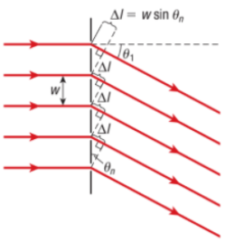
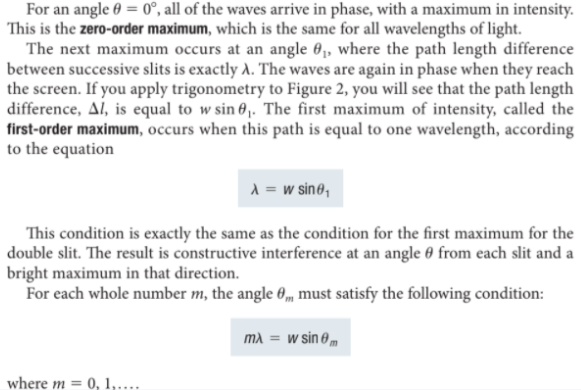
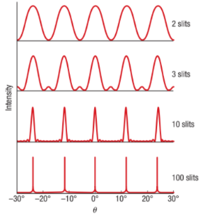
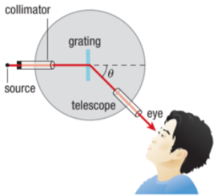

Callout
A diffraction grating is an optical element that divides(disperses) light composed of lots of different wavelengths (e.g., white light) into light components by wavelength. The simplest type of grating is one with a large number of evenly spaced parallel slits.
There are two types of diffraction gratings: transmission gratings, which transmit light, and reflection gratings, which reflect light. CDs and DVDs are common examples of reflection grating. When illuminated, they both produce iridescent reflections. A transmission grating, however, usually has an anti-reflection coating. Transmission gratings are typically used in spectroscopy.
Three equally spaced slits would produce the same type of interference pattern for the same reasons. Consider what happens when light of wavelength l passes through a large number, N, of equally spaced slits, as in a diffraction grating.


The same equation describes where the maxima occur for a single given slit separation w, so the maxima are all at the same angle. As the number of slits increases, each maximum becomes narrower. Since a typical diffraction grating has thousands of slits, the maxima it produces are in precisely defined directions. In addition, since the separation between slits is typically quite small, the maxima are widely separated from each other.

When light of different wavelengths is incident on a diffraction grating, each wavelength produces diffraction peaks in different directions. This makes a diffraction grating a powerful tool for separating light of different wavelengths.
(a) Red and green light diffract at different angles.
(b) The resulting interference pattern is seen on the screen.
The spectrometer shown is a device for measuring wavelengths of light. Light from a source passes through the slit and into the collimator. A collimator is a system of mirrors or lenses that produces parallel wave fronts. The light then passes through a diffraction grating and onto a telescope.

Watch this video: